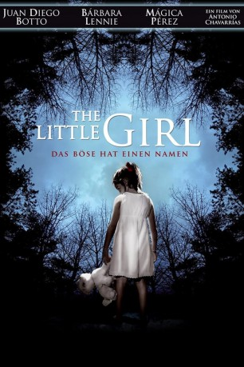

#9799 The Little Girl - Das Böse hat einen Namen
Alternativ: Childish Games (Englischer Titel)
 
 IMDB-Wertung: 5.6 / 10
IMDB-Wertung: 5.6 / 10  Metascore: 0
Metascore: 0 
Das Waisenkind Julia wird von dem jungen Paar Laura und Daniel aufgenommen, die bereits mit ihrem verstorbenen Vater befreundet waren. Doch die Präsenz des kleinen Mädchens sorgt bald dafür, dass sich Daniel im eigenen Haus immer unwohler und ausgestoßener fühlt. Schnell wird klar, dass Julia auf irgendeine Weise für den Tod des Vaters verantwortlich sein muss und die gleiche dunkle Macht nun auch auf Daniel überträgt.
Jahr: 2012
Dauer: 95 Minuten
FSK: 16
Land: Spanien Studio: 3L FilmverleihTonspuren:
Untertitel:
Auflösung: 1080p (1920x1040) Größe: 8509 MB
Genre: Thriller, Horror
Regisseur: Antonio Chavarrías
Drehbuch: Antonio Chavarrías, Sergi Belbel, Lluís Arcarazo, Jordi Galceran
Soundtrack: Zacarías M. de la Riva, Joan Valent
Darsteller:
- Juan Diego Botto als Daniel
 Bárbara Lennie als Laura
Bárbara Lennie als Laura- Nora Navas als Beatriz
- Monti Castiñeiras als Alfonso
- Celia Rico Clavellino als Canguro
- Mágica Pérez als Julia
- Marc Rodríguez als Mario
- Àgata Roca als Luisa
- Cristina Azofra als Clara
- Adrián Bermúdez als Daniel niño
- Pedro Muiño als Mario niño
- Dolors Tuneu als Chus
- Maria Pau Pigem als Doctora Moreno
- Carles Prats als Oriol
- Txitxu Llamas als Sacerdote
- Xènia Abadal als Madre Olaya
- Raúl Páez als Bedel
- Josep Espígol als Profesor
- Casimir Sancho als Profesor
- María Luisa Sales als Profesora
- María Jesús Rueda als Profesora
- Rosa M. Guillamet als Profesora
- Ramón Román als Profesor
- Pere Caminals als Profesor
- Pilar Romano als Profesora
- Yolanda Edo als Profesora
- Úrsula Valle als Profesora
- Rafael Ortiz als Profesor
- Inmaculada Ávalos als Monitora
Datei: X:\2012(G-M)\Little Girl - Das Böse hat einen Namen, The (2012, FSK16, 1920x1040).mkv seit 28.10.2018
Festplatte: HD 2012(A-M)
 Es gibt insgesamt 112 Filme in der Gruppe '2012(G-M)'
Es gibt insgesamt 112 Filme in der Gruppe '2012(G-M)'